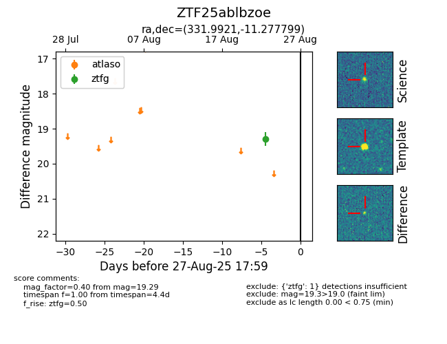

Target ZTF25ablbzoe at 2025-08-26 12:00, see:
FINK: fink-portal.org/ZTF25ablbzoe
Lasair: lasair-ztf.lsst.ac.uk/objects/ZTF25ablbzoe
ALeRCE: alerce.online/object/ZTF25ablbzoe
alt names
ZTF25ablbzoe (ztf,fink)
coordinates:
equatorial (ra, dec) = (331.9921,-11.27780)
galactic (l, b) = (47.2785,-48.52207)
photometry
last ztfg=19.29
1 ztfg detections
